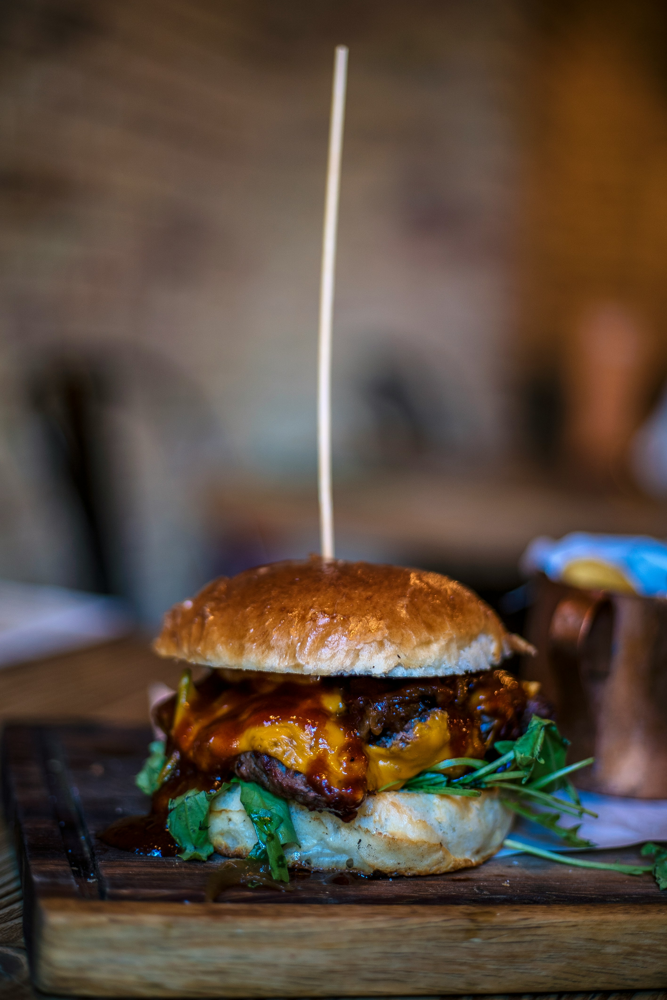
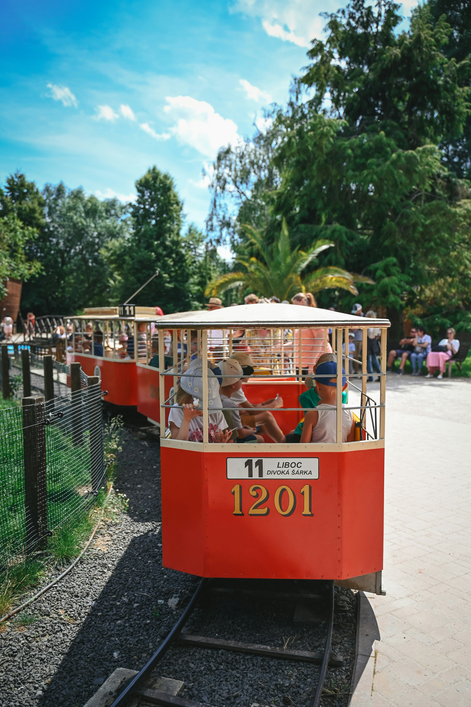

Nous avons le plaisir de vous proposer différents services
Nos Services

Zoo Folie'
Service de restauration rapide pour les grands et les petits

Train Folie
Tour du Zoo en petit train

Zoo Guide'
Visite guidée du Zoo